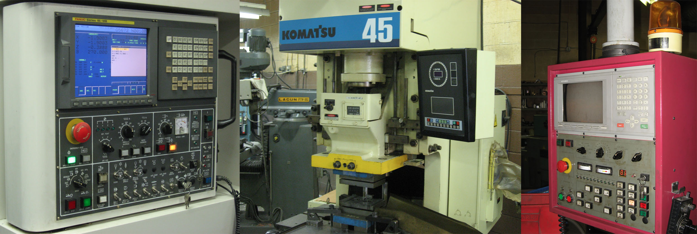

About us
About Wagner and Sons
Our history
The shop is in Allentown, Pennsylvania, and was founded over 30 years ago. It started as a conventional machine shop with repair services, and grew into CNC manufacturing, welding and fabrication. Its facility and CNC equipment have been expanded over the years, and the shop uses current CAD/CAM technology.
Our team
The team has over 100 years of combined experience. Certified machinists work with customers from early development through the final product. We emphasize quick turnaround and long-term relationships.
Our facility
The facility covers 7,500 square feet. It has CNC vertical machining and turning centers, a horizontal machining center, milling machines and conventional lathes.

Let's get started!
Get a free consultation by phone or through our contact form.